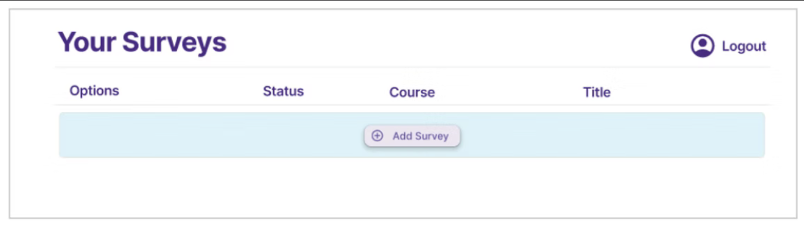
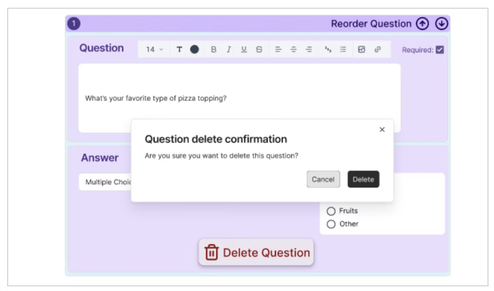

— 06
Final Design
The final prototype combined the winning designs from each prototype set into a single cohesive redesign. The team collaborated on the integration, ensuring decisions across all three areas worked together visually and functionally.
- Publish/Autosave (Design 3) — one-page layout with a color-coded publish toggle and autosave, visible both on the editing page and in the survey list.
- Media insertion (Design 2) — two icon buttons (link and upload) that open a drag-and-drop area inline within the question, with × buttons for easy removal.
- Question creation (Design 3) — rich text editor with individual answer option inputs, Enter-key navigation, and standard question type terminology throughout.

The redesigned PeerSurvey landing page — cleaner layout with clearer entry points for new and returning users.

Editing and question creation combined on one page. The autosave indicator is visible at the top — no more lost work.

A confirmation dialog before deleting a survey — a simple error prevention pattern the original interface lacked entirely.